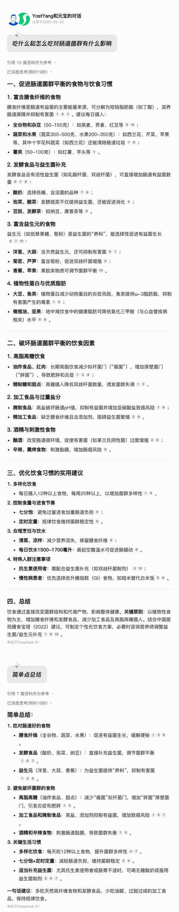
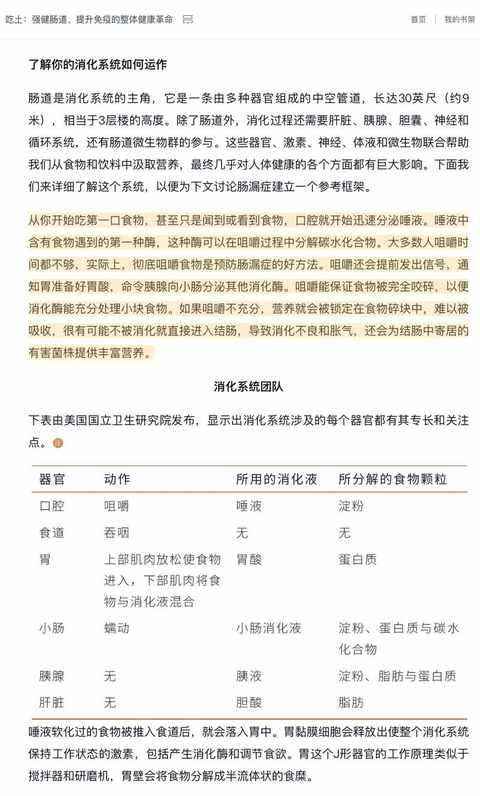
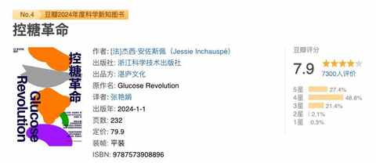
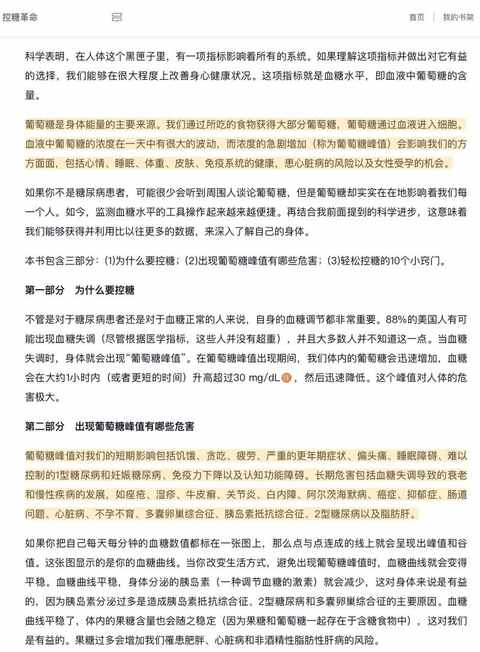
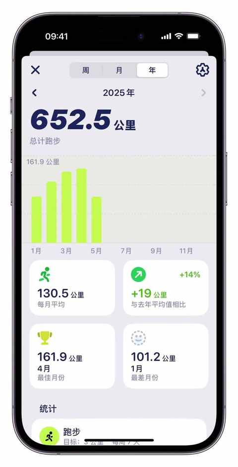
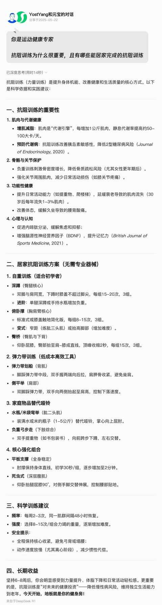

2025即将过半，减重30斤 的中年人又有了 3 个维持体重的新感受
约斯特普通
2025-05-22
一、 身体机能：
愈加能感知到下降
20 多岁的时候我是完全不信人过了 30 岁之后身体会明显的走下坡路的，当时 90kg，打一下午篮球也不觉得膝盖不舒服，体力上也能维持。
等过了 30 岁之后，有一次打完篮球就突然膝盖酸胀，虽然只有一点点并不影响走路等活动但依然在睡前下单了一副护膝。
瞬间就感知到：什么叫岁月不饶人，什么是身体走下坡路。
2025 年也正式步入 35 岁，整体饮食和运动习惯和去年一致，但是发现在周末更容易增重了。
去年是周一到周五饮食方面严格一些，周末不太控制；今年也沿用去年的方式会发现增重效果明显。

在仔细对比去年同期的运动数据之后发现：反而今年的运动量其实还更大一点：不管是运动时长还是卡路里消耗！
当排除掉多种情况之后，那么只能确定这是身体机能下降所带来的连锁反应！
得用发展的眼光来看问题，继续磨合继续调整吧……
二、你是你吃出来的：
吃什么怎么吃很重要
健康相关的内容看得多了之后，一些以往被忽视的常识就会被深刻的习得。
例如：吃与肠道菌群息息相关

例如：要充分咀嚼食物

例如：无需戒糖但要控糖


今年特别想改变的一个坏习惯：吃饭不怎么咀嚼、速度快、狼吞虎咽。
这个习惯所带来的直接影响就是： 饱腹感来得慢！
进而你会在已经吃够的情况下，继续吃，等停下来的时候就是10 分饱或者 12 分饱，吃的食物热量超标。
三、 运动形式 单一：
易遇 瓶颈期
由于教练请假，相较去年同期少了每周 1-2 次的力量训练。
对应的，增加了有氧的频次。

不能说没有效果，但只做有氧的情况下太容易遇到瓶颈。
力量训练也可以表述为抗阻训练，其重要性对于想长期保持体重可能比有氧的重要性更高。
